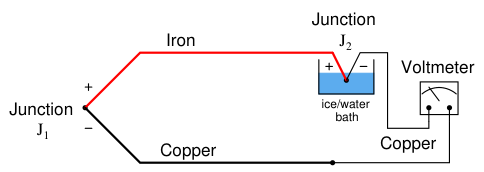
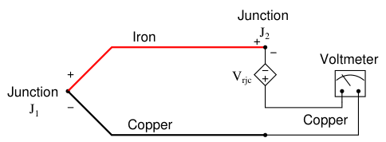
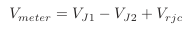
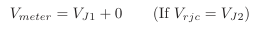
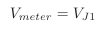
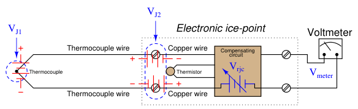
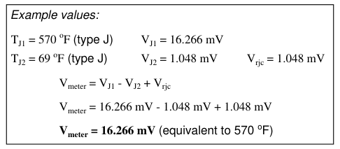

The original, as published: Tony R. Kuphaldt, Lessons In Industrial Instrumentation, Thermocouple reference junction compensation. CC BY 4.0, https://creativecommons.org/licenses/by/4.0/. Imported as published, from https://www.ibiblio.org/kuphaldt/socratic/sinst/book/liii.pdf https://www.ibiblio.org/kuphaldt/socratic/sinst/book/liii.pdf
Multiple techniques exist to deal with the influence of the reference junction’s temperature12. One technique is to physically fix the temperature of that junction at some constant value so it is always stable. This way, any changes in measured voltage must be due to changes in temperature at the measurement junction, since the reference junction has been rendered incapable of changing temperature. This may be accomplished by immersing the reference junction in a bath of ice and water, the ice/water mixture ensuring a stable temperature by means of water’s latent heat of fusion13:

In fact, this is how thermocouple temperature/voltage tables are referenced: describing the amount of voltage produced for given temperatures at the measurement junction with the reference junction held at the freezing point of water (0 oC = 32 oF). With the reference junction maintained at the freezing point of water, and thermocouple tables referenced to that specific cold junction temperature, the voltmeter’s indication will simply and directly correspond to the temperature of measurement junction J1 at all times. However, fixing the reference junction at the temperature of freezing water is impractical for any real thermocouple application outside of a laboratory. Instead, we need to find some other way to compensate for changes in reference junction temperature, so that we may accurately interpret the temperature of the measurement junction despite random changes in reference junction temperature.
12Early texts on thermocouple use describe multiple techniques for automatic compensation of the reference (“cold”) junction. One design placed a mercury bulb thermometer at the reference junction, with a loop of thin platinum wire dipped into the mercury. As junction temperature rose, the mercury column would rise and short past a greater length of the platinum wire loop, causing its resistance to decrease which in turn would electrically bias the measurement circuit to offset the effects of the reference junction’s voltage. Another design used a bi-metallic spring to offset the pointer of the meter movement, so that changes in temperature at the indicating instrument (where the reference junction was located) would result in the analog meter’s needle becoming offset from its normal “zero” point, thus compensating for the offset in voltage created by the reference junction. 13For any two-phase mixture of any single substance (in this case, H2O) the temperature of that mixture will be a strict function of pressure, the mixture possessing only one thermodynamic degree of freedom. Any addition or removal of heat from the ice/water mix results in a phase change (e.g. either more ice melts to become water, or more water freezes to become ice) rather than a temperature change. If even more precision is desired, a triple point cell may be used to fix the reference junction’s temperature, since any substance at its triple point will possess zero degrees of thermodynamic freedom (i.e. neither its pressure nor temperature can change).
A practical way to compensate for the reference junction voltage is to include an additional voltage source within the thermocouple circuit equal in magnitude and opposite in polarity to the reference junction voltage. If this additional voltage is made continually equal to the reference junction’s potential, it will precisely counter the reference junction voltage, resulting in the full (measurement junction) voltage appearing at the measuring instrument terminals. This is called a reference junction compensation or cold junction14 compensation circuit:
Compensating for the effects of J2 using a ‘‘reference junction compensation’’ source to generate a counter-voltage

In order for such a compensation strategy to work, the compensating voltage must continuously track the voltage produced by the reference junction. To do this, the compensating voltage source (Vrjc in the above schematic) uses some other temperature-sensing device such as a thermistor or RTD to sense the local temperature at the terminal block where junction J2 is formed and produce a counter-voltage that is precisely equal and opposite to J2’s voltage (Vrjc = VJ2) at all times. Having canceled the effect of the reference junction, the voltmeter now only registers the voltage produced by the measurement junction J1:



14Please note that “cold junction” is just a synonymous label for “reference junction.” In fact the “cold” reference junction may very well be at a warmer temperature than the so-called “hot” measurement junction! Nothing prevents anyone from using a thermocouple to measure temperatures below the freezing point of water.
Some instrument manufacturers sell electronic ice point modules designed to provide reference junction compensation for un-compensated instruments such as standard voltmeters. The “ice point” circuit performs the function shown by Vrjc in the previous diagram: it inserts a counter-acting voltage to cancel the voltage generated by the reference junction, so that the voltmeter only “sees” the measurement junction’s voltage. This compensating voltage is maintained at the proper value according to the terminal temperature where the thermocouple wires connect to the ice point module, sensed by a thermistor or RTD:


In this example, we see the measurement junction (J1) at a temperature of 570 degrees Fahrenheit, generating a voltage of 16.266 millivolts. If this thermocouple were directly connected to the meter, the meter would only register 15.218 millivolts, because the reference junction (J2, at 69 degrees Fahrenheit) opposes with its own voltage of 1.048 millivolts. With the ice point compensation circuit installed, however, the 1.048 millivolts of the reference junction is canceled by the ice point circuit’s equal-and-opposite 1.048 millivolt source. This allows the full 16.266 millivolt signal from the measurement junction reach the voltmeter where it may be read and correlated to temperature by a type J thermocouple table.
At first it may seem pointless to go through the trouble of building a reference junction compensation (ice point) circuit, when doing so requires the use of some other temperature-sensing element such as a thermistor or RTD. After all, why bother to do this just to be able to use a thermocouple to accurately measure temperature, when we could simply use this “other” device to directly measure the process temperature? In other words, isn’t the usefulness of a thermocouple invalidated if we must rely on some other type of electrical temperature sensor just to compensate for an idiosyncrasy of the thermocouple? The answer to this very good question is that thermocouples enjoy certain advantages over these other sensor types. Thermocouples are extremely rugged and have far greater temperaturemeasurement ranges than thermistors, RTDs, and other primary sensing elements. However, if the application does not demand extreme ruggedness or large measurement ranges, a thermistor or RTD is most likely the better choice!